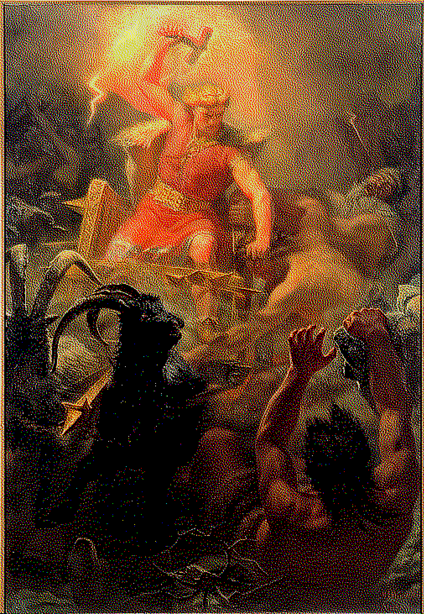
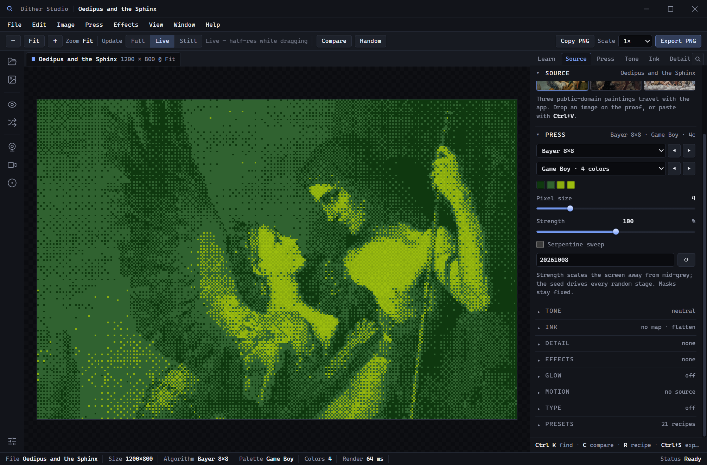
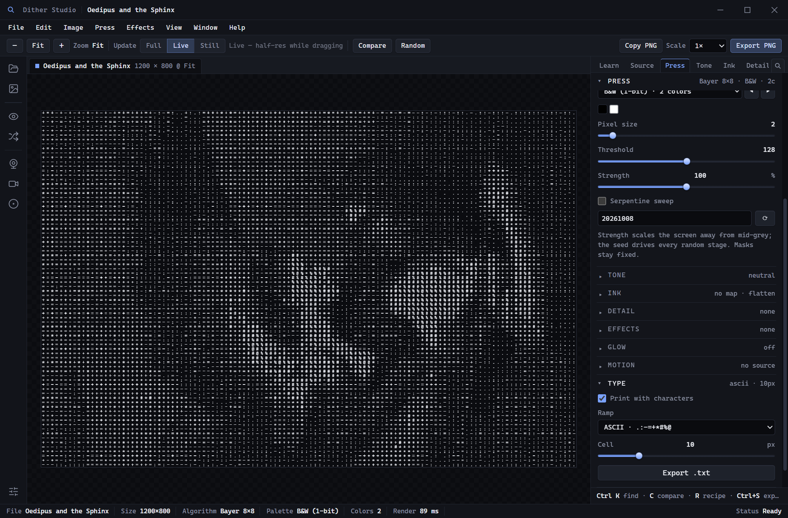
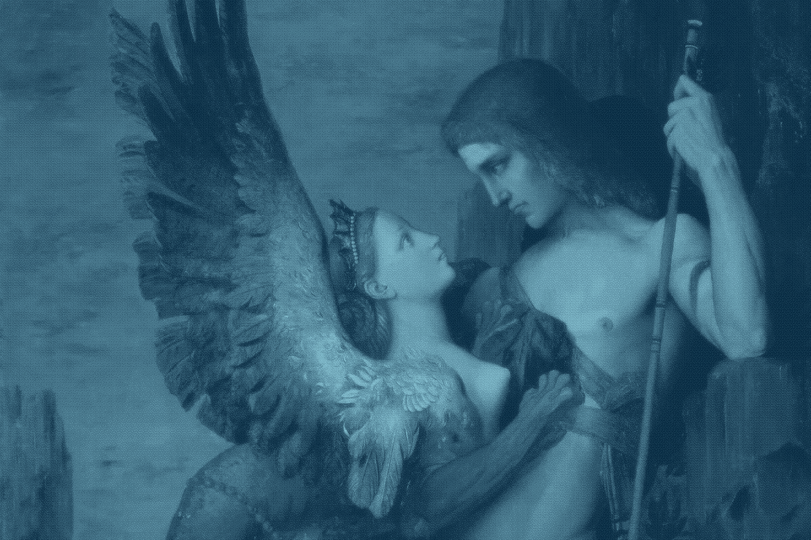
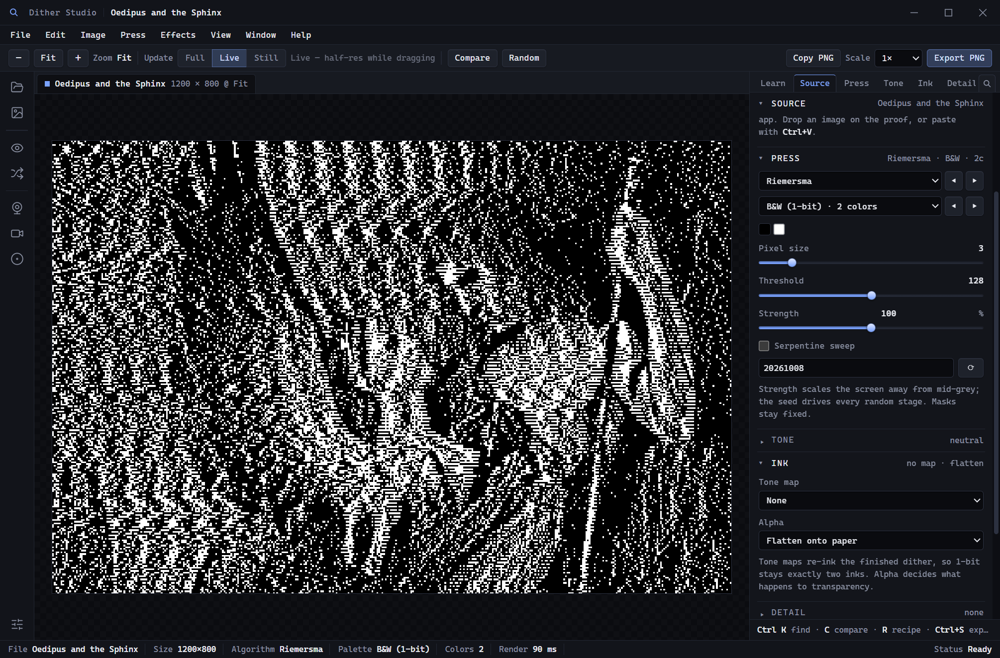
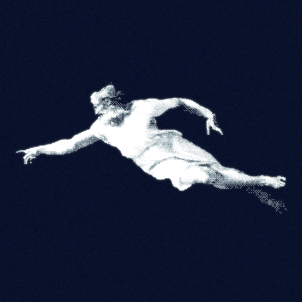

A hand, a spark, a screen of marks.
Classical paintings enter as light and leave as structure. Every mark is placed by an algorithm.

46 algorithms — Bayer to blue noise
24 palettes — Game Boy to ice
13 effects — grain to pixel sort

Print the image as characters instead of pixels, then carry the grid away as plain text.


Ordered screens, noise, error diffusion, a hand-picked palette. Each is a different account of the same painting.

Dither Studio
Let there be pixels.
Free·Offline·Windows & macOS